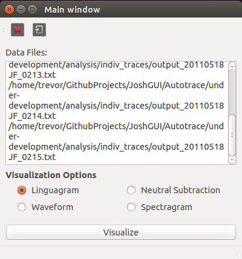
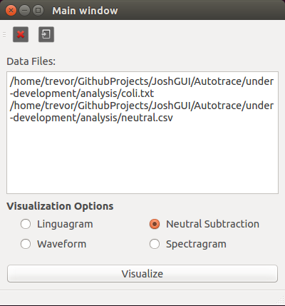
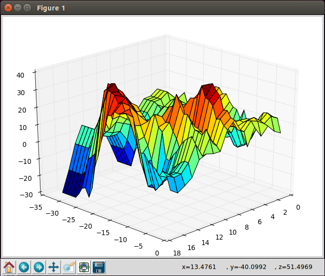
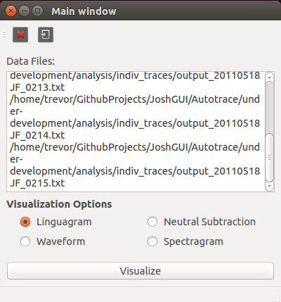

Linguagram:
Takes all of the given traces and returns a shape over time of all the files provided, using the filenames to choose the position in the timeline, using the APIL standard naming scheme


This manual explains the usage of the APIL analysis tools using the GUI tool included (Credit to Joshua Meyer)
The tool currently supports Linguagram and Neutral Subtraction analysis
In the data-analysis/analysis-tools directory, launch Analysis_Qt with the following command. python Analysis_Qt.py
note: after integrated into main project, fix path
Also, add images
Load in your data files: This is easiest to do by clicking the "Open" button, and selecting them from the dialog that appears.
The program will accept individual trace files, or compiled/concatenated trace files.
When using neutral subtraction, make sure you provide only two traces, one of which must have "neutral" in the file name. Best results if you use a csv file.
Select the option on the bottom of the window that is appropriate for the files uploaded and result desired
Neutral Subtraction:
Subtracts the points between the neutral file and the not-neutral file, providing a tongue-shape-over-time three dimensional graph


Linguagram:
Takes all of the given traces and returns a shape over time of all the files provided, using the filenames to choose the position in the timeline, using the APIL standard naming scheme
